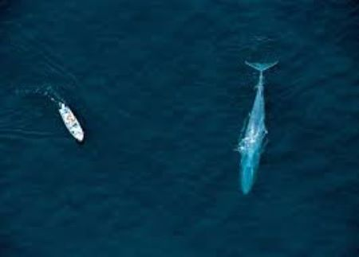

Blue Whale
The Blue Whale is known as Killer whale because of their size, power and speed.
It is very dangerous and make people sad when it attacks them.
Lair of nemesis
- It is located near the seafloor in the North Crevasse, at
coordinates C-2 northeast.
- It doubles as the entrance to a small, solemn cave called
Osiris Courtyard.
- Like the Chimney Forest in the Southern Crevasse.

Link back to index